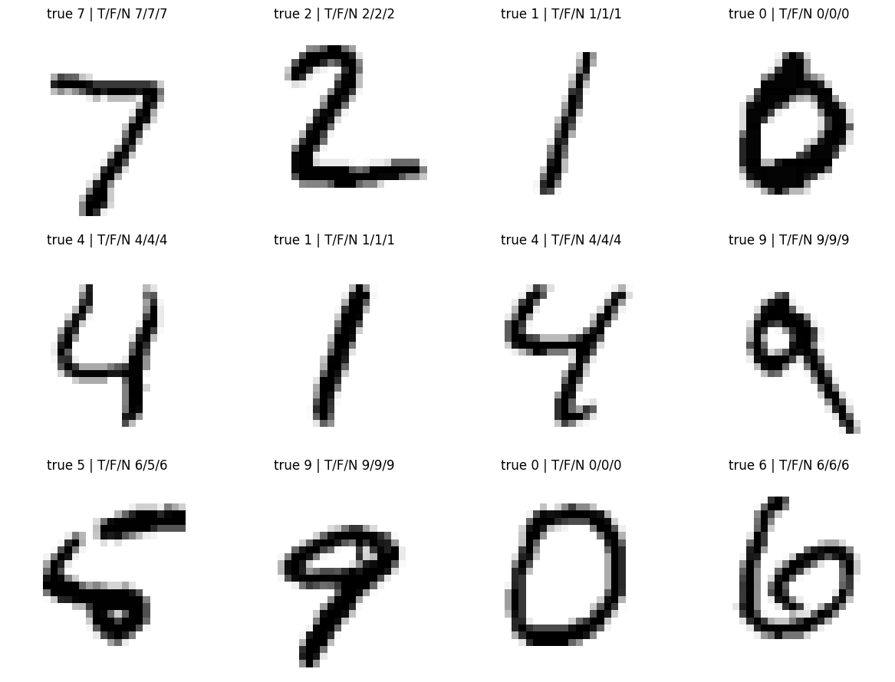

Load supporting course files when running in Colab
from pathlib import Pathfrom urllib.request import urlretrievefor name in ['lecture09_data.py']: target = Path(name)ifnot target.exists(): target.parent.mkdir(parents=True, exist_ok=True) urlretrieve('https://raw.githubusercontent.com/MarcinPlodzien/deep-learning-for-scientific-discovery/main/notebooks/lecture-09/'+ name, target)
Three methods for handwritten digits
We compare a decision tree, random forest and small dense neural network on MNIST images. Every method receives the same 784 pixel brightnesses, the same fitting images and the same test images. We inspect validation performance before opening the test results, then display predictions on the same objects.
Keep lecture09_data.py beside the notebook. It loads the original MNIST files and checks their checksums. The download is about 12 MB and is cached. MNIST is described by LeCun et al..
An image has 28 by 28 grayscale pixels. We divide brightness by 255 and flatten the image row by row. A tree question tests one pixel. A dense network can combine many pixel values. Both use the supplied representation without an explicit convolutional structure.
We compare three candidate depths, with at least five fitting images per leaf. Ties go to the smaller depth. The forest and network settings in the following cell are fixed teaching choices. The test images take no part in these choices.
Code
depths = [3, 10, 18]trees = [DecisionTreeClassifier(max_depth=d, min_samples_leaf=5, random_state=SEED).fit(X_fit, y_fit)for d in depths]scores = [accuracy_score(y_val, tree.predict(X_val)) for tree in trees]selected_tree = trees[int(np.argmax(scores))]display(pd.DataFrame({"depth": depths, "validation accuracy": scores}))
depth
validation accuracy
0
3
0.449000
1
10
0.815000
2
18
0.821333
Fit a forest and a network
Scikit-learn handles training internally. The forest combines randomized trees. The network has one hidden layer of 64 ReLU units and ten probability outputs. early_stopping=True uses an internal subset of the fitting images and stops when that internal score ceases to improve. The external validation images remain available for inspection.
Code
models = {"Tree": selected_tree,"Forest": RandomForestClassifier(n_estimators=100, min_samples_leaf=2, random_state=SEED, n_jobs=2),"Network": MLPClassifier(hidden_layer_sizes=(64,), alpha=1., batch_size=128, max_iter=150, early_stopping=True, n_iter_no_change=12, random_state=SEED)}for name in ["Forest", "Network"]: models[name].fit(X_fit, y_fit)display(pd.DataFrame({"model": list(models), "validation accuracy": [accuracy_score( y_val, model.predict(X_val)) for model in models.values()]}))
model
validation accuracy
0
Tree
0.821333
1
Forest
0.954000
2
Network
0.940333
Evaluate the fixed models
Accuracy is the fraction of correctly classified images. The baseline predicts the most frequent fitting digit. Each confusion matrix shows which true digits are assigned to each predicted digit. The configurations and tuning budgets are deliberately small, so this is an illustration of the methods on a shared input, rather than a comprehensive image benchmark.
The first twelve test images are fixed independently of model success. T, F and N denote tree, forest and network. Inspect a disagreement, then use predict_proba to see how strongly each model favours its answer.
Code
fig, axes = plt.subplots(3, 4, figsize=(12, 9))for i, ax inenumerate(axes.flat): ax.imshow(test_images[i], cmap="gray_r") answers = [int(model.predict(X_test[i:i+1])[0]) for model in models.values()] ax.set_title(f"true {y_test[i]} | T/F/N {answers[0]}/{answers[1]}/{answers[2]}", fontsize=12) ax.axis("off")fig.tight_layout()fig.savefig("figures/mnist_three_model_predictions.pdf", bbox_inches="tight")fig.savefig("figures/mnist_three_model_predictions.png", dpi=150, bbox_inches="tight")plt.show()display(pd.DataFrame({name: model.predict_proba(X_test[:1])[0] for name, model in models.items()}))

Tree
Forest
Network
0
0.0
0.0
0.000672
1
0.0
0.0
0.000030
2
0.0
0.0
0.000935
3
0.0
0.0
0.003329
4
0.0
0.0
0.000028
5
0.0
0.0
0.001164
6
0.0
0.0
0.000003
7
1.0
1.0
0.990134
8
0.0
0.0
0.000180
9
0.0
0.0
0.003524
Practice
Explain why a high probability can accompany a wrong prediction. State what a tree question about one pixel measures. Predict how moving a digit by two pixels might affect the three models.
Feedback
Probabilities are model estimates whose reliability needs independent evaluation. A pixel question tests brightness at one fixed location. Moving an image changes its input coordinates. These three classifiers have no built-in convolutional weight sharing, so shift behaviour has to be learned from examples or addressed with another architecture.